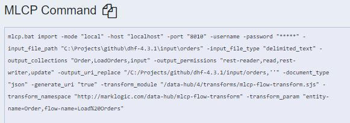

Run Data Hub Input Flow
This template demonstrates how to ingest a document and transform it with a Data Hub Framework input flow.
This uses the Data Hub Framework online store example as the basis for the template.
You can download the NiFi template here.
Input Data
The input data is a CSV file. Looking at MLCP command for the input flow, we can derive important details for the PutMarkLogic process.

These are the parameters that map to properties in PutMarkLogic:
-output_collections "Order,LoadOrders,input"
-transform_module "/data-hub/4/transforms/mlcp-flow-transform.sjs"
-transform_param "entity-name=Order,flow-name=Load%20Orders"
Because the transform module is SJS, the Server Transform property value is ml:sjsInputFlow. If it were XQuery, we would use ml:inputFlow.
The transform parameters are given as separate custom properties prefixed with trans:. (see below under PutMarkLogic)
Processors
GetFile
Reads files from a watched directory
Properties
- Input Directory
- /path/to/marklogic-data-hub/examples/online-store/input/orders
- Keep Source File
- true
Scheduling
- Run Schedule
- 10000 days
InferAvroSchema
Properties
- Schema Output Destination
- flowfile-attribute
- Input Content Type
- csv
- Get CSV Header Definition From Data
- true
- Avro Record Name
- MyCSV
Settings
- Automatically Terminate Relationships
- failure, original, unsupported content
ConvertCSVToAvro
Properties
- Record Schema
- ${inferred.avro.schema}
Settings
- Automatically Terminate Relationships
- failure, incompatible
SplitAvro
Properties
(all default)
Settings
- Automatically Terminate Relationships
- failure, original
ConvertAvroToJson
Properties
(all default)
Settings
- Automatically Terminate Relationships
- failure
EvaluateJsonPath
Store values from JSON in FlowFile properties
Properties
- Destination
- flowfile-attribute
- order.id (custom property)
- $.id
- order.product_id (custom property)
- $.product_id
Settings
- Automatically Terminate Relationships
- failure, unmatched
UpdateAttribute
Set the MarkLogic URI attribute
Properties
- marklogic.uri (custom property)
- /${order.product_id}/${order.id}.json
PutMarkLogic
Properties
- DatabaseClient Service
- (MarkLogicClientService, pointing to data-hub-STAGING database and the corresponding HTTP port)
- Collections
- Order,LoadOrders,input
- Server transform
- ml:sjsInputFlow
- URI attribute name
- marklogic.uri
- trans:entity-name (custom property)
- Order
- trans:flow-name (custom property)
- Load Orders